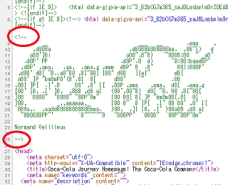
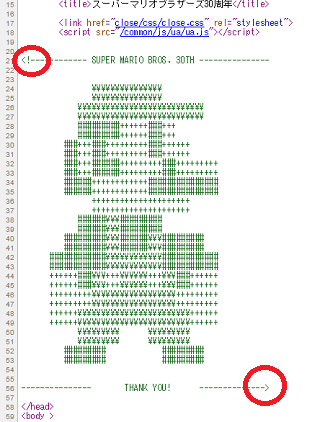

コメントを挿入するhtmlタグ <!-- -->
コメントのhtmlタグ<!-- -->で囲った箇所はサイト上では表示されません。
htmlソースを確認してはじめてわかる記述なので、サイト訪問者が目にすることはまずないです。主に、サイト運営者が自分用、あるいは共同作業者へのメモとして記述するためのhtmlタグになります。このコメントタグで表示を無効化することは「コメントアウト」などともよばれています。
■メモ的な使い方
例えば、以下のようにhtmlソースに記述したとします。
<!-- ここから本文スタート -->
<div>本文の内容</div>
<!-- 本文はここまで -->
すると、コメントタグで囲まれた内容は無効化されてこのように表示されます。
本文の内容
このようにコメントを挿入することで、共同で作業している他の人でも分かり易くなるメリットがあります。
■一時的に表示を無効化
メンテナンス中などで広告タグを一時的に非表示にしておきたい時などは、タグそのものをコメントアウトして無効化する使い方があります。
<!-- <div>メンテナンス中の広告</div> -->
再開したらコメントをはずすだけで元どおりに表示されるようになります。
■遊びごころでの使用例
企業サイトなどではアスキーアートをコメントアウトして、htmlソースを見た人にしか分からない遊びゴコロで使われることもあります。
こちらはコカ・コーラの自社メディア「Coca-Cola Journey」のhtmlソースです。

Coca-Colaの文字が隠されていました。
こちらはスーパーマリオブラザーズ30周年公式サイトです。

上記のような複数行にわたる場合でも、コメントタグで囲まれた部分はすべて無効になります。マリオの例では横線が多数連続していますが、最初の<!--と最後の-->の部分以外は必要ありません。
■スタイルシート（css）のコメントアウト
cssでコメントする際は /* */ を記述します。ブラウザによっては直前に全角文字があると閉じられないケースもあるため、閉じタグの直前に半角スペースを挟むのが一般的です。
/* ここからスタイルシート */
個人的にはhtmlのコメントタグにも半角スペースを入れていますが、たいていのブラウザでは正常に認識してくれるはずです。
■コメントタグを2重にコメントアウトすることは不可
注意したい点としましては、コメントタグ自体をコメントアウトしようとしても、最初に閉じタグが出てきた時点で閉じられてしまいます。
<!-- <!-- コメント -->自体をコメントする。 -->
このような使い方はできませんので注意しましょう。
■SEO対策上の影響
検索エンジン側ではコメント内に記述された内容は無視されますので、コメントタグ内に書かれた文字についてはSEO対策上は何の影響もないです。もし違いがあるとすれば、大量のコメントを挿入した場合にはファイルのバイト数がほんの少し増えますので、サイトの読み込み速度がわずかに遅くなるかもしれません。
けれども、通常のコメントの挿入でサイトが遅くなるといったことはまずありませんので、必要に応じて気にせずに挿入するとよいでしょう。